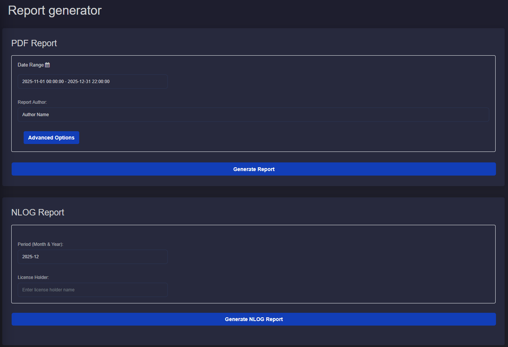
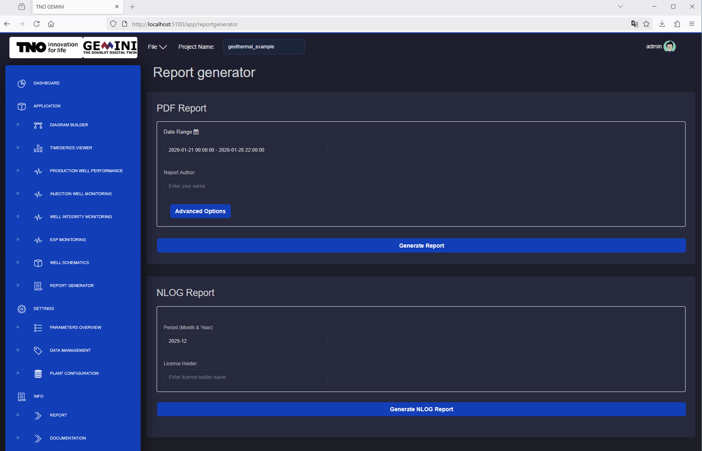

4.9. Report Generator
4.9.1. Description
The Report Generator automates repetitive operational reporting tasks. Users can generate standardized PDF and NLOG reports directly from GEMINI.
4.9.2. PDF report
The PDF report includes sections for injection wells, production wells, and ESPs, with summary tables and operational plots.
Time range and Author
To generate a PDF report, select start and end date. The author field is optional.
{kind=link}
Fig. 4.3 Time range and author’s name fields for the generation of reports. Date is defined with a dedicated input dialog.
Default options
By default, all available report sections are included:
Title page
Summary table providing overview of injection wells and production wells with statistical values.
Summary plots providing overview of injection wells and production wells with time-series plots and maximum values.
Injection well report with comprehensive time series values plot.
Production well report with comprehensive time series values plot.
ESP report with comprehensive time-series values plot.
Injection well cross plots with skin lines.
ESP cross plots.
Advanced options
In Advanced Options, users can:
enable/disable specific report sections
adjust skin-line flow range and skin-factor values
configure ESP plot limits and included plot types
add section-specific notes/comments
{kind=link}
Fig. 4.4 The button Advanced Options reveals the options menu. The user can adjust the report according to their needs.
4.9.3. NLOG report
The NLOG output is generated in Microsoft Excel format. The workbook includes VBA logic for XML export through the Exporteer naar XML button.
Important: On some systems, the Excel file must be opened from a trusted location for VBA execution.
Time range and License Holder
NLOG generation requires month/year and license holder. NLOG reports are always generated for a single month.
{kind=link}

Fig. 4.5 Period and License Holder inputs.
Generation
After entering required inputs:
Generate Report returns the PDF report
Generate NLOG Report returns the Excel NLOG report
{kind=link}

Fig. 4.6 The button Generate NLOG Report prepares the EXCEL file. The file can be downloaded directly from the browser.